Plain language summary
In preterm infants receiving human milk, fortification with a human milk-derived product rather than a bovine milk-derived product has not been shown to reduce necrotising enterocolitis, mortality, sepsis, chronic lung disease or retinopathy. The pooled estimate for NEC favours the human milk-derived product but is compatible with no effect, depends heavily on the earliest and least directly relevant trial, and rests on 48 events in total. The certainty of the evidence is low for both primary outcomes. Adequately powered randomised trials that hold the base diet constant are needed before human milk-derived fortification can be recommended on clinical grounds.
Abstract
Background. Human milk does not by itself meet the protein, mineral and energy requirements of the very preterm infant, and multi-nutrient fortification of maternal or donor milk is standard practice in neonatal intensive care. Conventional fortifiers are manufactured from bovine milk protein. An alternative class of fortifier is manufactured from pooled, pasteurised donor human milk, and is marketed as part of an "exclusive human milk diet" in which every component of enteral nutrition — base milk, fortifier and any supplement used to cover a shortfall in the mother's own milk — is of human origin.
Objective. To determine the effects of human milk-derived multi-nutrient fortifier, compared with bovine milk-derived fortifier, on necrotising enterocolitis, mortality and other clinical outcomes in preterm infants receiving human milk.
Methods. MEDLINE/PubMed, Europe PMC and ClinicalTrials.gov were searched to 22 September 2026, supplemented by reference-list searching of five prior syntheses. Randomised trials published from 2010 onward comparing a human milk-derived multi-nutrient fortifier with a bovine milk-derived fortifier in preterm infants fed human milk were eligible. Two primary outcomes were pre-specified: NEC Bell stage II or greater, and all-cause mortality before discharge. Dichotomous data were pooled as Mantel-Haenszel random-effects risk ratios, continuous data as inverse-variance mean differences. Risk of bias was assessed with RoB 2 and certainty with GRADE.
Results. 7 trials (15 reports; 920 infants) were included. RR 0.63 (95% CI 0.36 to 1.09) for NEC (I² = 0%, τ² = 0.00, Q p = 0.49) and RR 0.77 (95% CI 0.43 to 1.36) for mortality. No secondary outcome showed a significant difference. Certainty was moderate for bronchopulmonary dysplasia, low for both primary outcomes, and very low for surgical NEC and growth.
Conclusions. Human milk-derived fortification has not been shown to reduce NEC or death; the evidence is of low certainty and adequately powered trials are needed.
Background
Human milk does not by itself meet the protein, mineral and energy requirements of the very preterm infant, and multi-nutrient fortification of maternal or donor milk is standard practice in neonatal intensive care. Conventional fortifiers are manufactured from bovine milk protein. An alternative class of fortifier is manufactured from pooled, pasteurised donor human milk, and is marketed as part of an "exclusive human milk diet" in which every component of enteral nutrition — base milk, fortifier and any supplement used to cover a shortfall in the mother's own milk — is of human origin.
The biological rationale for avoiding bovine protein rests on the hypothesis that intact bovine milk proteins provoke an inflammatory response in the immature intestine and thereby contribute to necrotising enterocolitis (NEC), the most feared gastrointestinal complication of prematurity. Observational series and the first randomised trial of an exclusive human milk diet reported substantially lower rates of NEC, and a number of neonatal units have adopted human milk-derived fortification on that basis. The products are, however, an order of magnitude more expensive than bovine fortifiers, and donor milk is a finite resource, so the size and certainty of any clinical benefit matter a great deal for practice and for policy.
Two features of the evidence base complicate its interpretation. First, several trials have compared not fortifiers alone but whole dietary strategies: the human milk-derived fortifier arm also receives donor human milk or human milk-based formula in place of preterm formula, so the contrast confounds the fortifier with the base diet. Second, the outcome that motivates the intervention — NEC — is uncommon, so individual trials have been far too small to detect or exclude clinically important differences.
This review synthesises the randomised evidence published from 2010 onward, separating, where the data allow, trials that compared fortifiers alone from trials that compared an exclusive human milk diet with a mixed diet.
Objective
To determine the effects of human milk-derived multi-nutrient fortifier, compared with bovine milk-derived fortifier, on necrotising enterocolitis, mortality and other clinical outcomes in preterm infants receiving human milk.
Methods
Criteria for considering studies
Types of studies. Randomised and quasi-randomised controlled trials published from 2010 onward. Non-randomised and observational designs were excluded by protocol; where a trial published both a primary report and secondary analyses, the trial was counted once and the secondary reports were treated as linked reports.
Types of participants. Preterm infants (gestational age below 37 weeks) or low-birth-weight infants receiving human milk (mother's own milk, donor milk, or both) as the base enteral diet.
Types of interventions. Intervention: a multi-nutrient fortifier manufactured from human milk. Comparator: a multi-nutrient fortifier manufactured from bovine milk. Trials in which the human milk-derived fortifier arm also received human milk-based formula, and the bovine arm preterm formula, were eligible and were analysed in a separate subgroup ("exclusive human milk diet versus mixed diet") from trials in which the fortifier was the only difference between arms ("fortifier only").
Outcomes. Primary: NEC (modified Bell stage II or greater) and all-cause mortality before discharge. Secondary: surgical NEC, late-onset or culture-proven sepsis, bronchopulmonary dysplasia or chronic lung disease, severe retinopathy of prematurity, feeding intolerance or major feeding interruption, in-hospital weight gain velocity, and change in weight z-score from birth to discharge.
Search methods
MEDLINE via PubMed (n = 4,532), Europe PMC (n = 1,212) and ClinicalTrials.gov (n = 75) were searched on 22 September 2026 with no language or publication-status restriction, using a fortifier-source concept block combined with a prematurity block. Reference lists and included-study tables of five prior syntheses were hand-searched. The full strategies are reproduced in the accompanying search_strategy.md.
Data collection and analysis
Dichotomous outcomes were pooled as risk ratios (RR) with 95% confidence intervals using the Mantel-Haenszel method with DerSimonian-Laird random-effects weighting; risk differences were computed alongside to express absolute effects. Continuous outcomes were pooled as mean differences by the inverse-variance random-effects method. Where a trial reported medians and interquartile ranges, means and standard deviations were approximated using the quantile estimators of Wan and colleagues; where a trial had more than two eligible arms, the human milk-derived arms were combined using the formula in section 6.5.2.10 of the Cochrane Handbook to avoid double-counting the shared comparator.
Heterogeneity was quantified with tau-squared, Cochran's Q and the I-squared statistic. Pre-specified subgroup analysis compared trials by design (exclusive human milk diet versus mixed diet; fortifier only), tested with a random-effects test for subgroup differences. Pre-specified sensitivity analyses comprised a fixed-effect Mantel-Haenszel model, Peto odds ratios for the rare binary outcomes, exclusion of the trial at high risk of bias, restriction to trials randomising at least 100 infants, and leave-one-out removal of each trial in turn.
Risk of bias was assessed with the Cochrane RoB 2 tool across the five domains, and the certainty of evidence for each outcome was rated using the GRADE approach. Funnel plots and formal tests for small-study effects were not performed: no outcome was informed by ten or more trials, the threshold below which such tests have too little power to be informative.
Results
Results of the search
The searches returned 5,744 database records and 75 register records; 1,182 duplicates were removed, leaving 4,562 records for screening. A high-sensitivity keyword prefilter set aside 4,271 records containing no fortifier-comparison vocabulary, 291 records were assessed at title and abstract, 269 were excluded and 3 were excluded on the publication-date limit. 19 reports were sought and retrieved in full text, of which 4 were excluded and one awaits classification; the remaining 14 reports, together with one report identified by hand-searching, describe the 7 included trials (15 reports in total).
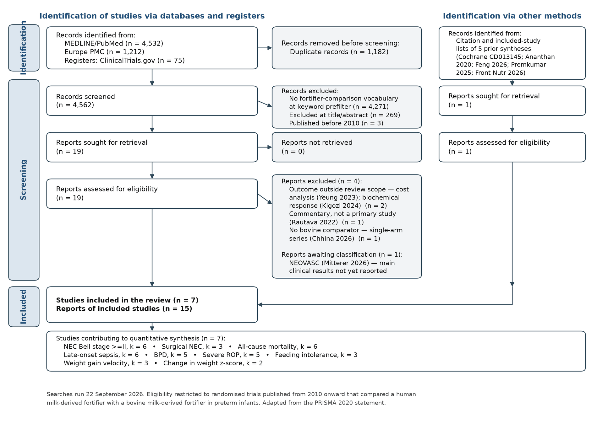
Included studies
Seven randomised trials, reported in 15 publications, met the eligibility criteria. They randomised 920 infants in total and were conducted in the United States and Austria, Canada, India, the United Kingdom, Sweden and Japan. Sample sizes ranged from 31 to 229 infants, and two trials — Berrington 2025 (stopped early for slow recruitment) and Kotha 2022 — randomised fewer than 60 infants each.
The trials fall into two clearly distinct designs. In four trials (Sullivan 2010, Embleton 2023, Jensen 2024, Mizuno 2026) the human milk-derived fortifier was delivered as part of an exclusive human milk diet, with donor milk or human milk-based formula replacing preterm formula in the intervention arm; the comparison is therefore between two feeding strategies rather than two fortifiers. In three trials (O'Connor 2018, Kotha 2022, Berrington 2025) both arms received a human milk base diet and the fortifier was the only planned difference. Only O'Connor 2018 was blinded; the remaining six trials were open-label, although Sullivan 2010 and Jensen 2024 used blinded adjudication of NEC and other major morbidities.
Primary outcomes varied widely across the trials and only one (Jensen 2024) was powered on a composite clinical endpoint that included NEC; the others were powered on parenteral nutrition duration, feeding interruption, gut microbiome composition, growth velocity or faecal calprotectin. No trial was powered to detect a difference in NEC or mortality alone.
| Trial | Setting | n | Design | Population | Trial primary outcome |
|---|---|---|---|---|---|
| Sullivan 2010 | USA/Austria | 207 | 3-arm parallel RCT (HM100, HM40, BOV) | BW 500-1250 g, enteral feeds by day 21 | Days of parenteral nutrition; NEC |
| O'Connor 2018 (OptiMoM) | Canada | 127 | 2-arm parallel RCT, double-blind | BW <1250 g, human-milk-fed (MOM + donor milk), no formula | Feeding interruption ≥12 h or >50% reduction in feed volume |
| Kotha 2022 | India | 53 | 2-arm parallel RCT, open-label | BW 1000-1500 g, GA <34 wk, human milk only | Growth velocity |
| Embleton 2023 | UK | 126 | 2-arm parallel RCT, open-label | GA <30 wk | Gut microbiome (stool bacterial profiles) |
| Jensen 2024 (N-forte) | Sweden | 229 | 2-arm parallel RCT, open-label | GA <28 wk, exclusively human milk fed | Composite of NEC, culture-proven sepsis and mortality |
| Berrington 2025 | UK | 31 | 2-arm parallel RCT, open-label; stopped early | GA <32 wk or BW <1500 g on exclusive human milk diet | Faecal calprotectin days 7 and 21 |
| Mizuno 2026 | Japan | 147 | 2-arm parallel RCT, open-label, phase III | VLBW <1500 g | Weight gain velocity birth to 34 wk GA (non-inferiority then superiority) |
Excluded studies and studies awaiting classification
4 full-text reports were excluded: two reported outcomes outside the review's outcome set (a cost analysis and a biochemical-response analysis, both of the OptiMoM trial), one was an invited commentary, and one was a single-arm series without a bovine comparator. One report awaits classification: an ancillary neuroimaging analysis of the NEOVASC trial, whose main clinical results are not yet reported and whose randomised contrast concerns the duration rather than the source of fortification.
Risk of bias in included studies
No trial was judged at low overall risk of bias. Six of the seven were rated "some concerns", driven mainly by the open-label delivery of the intervention (domain 2) and by incomplete pre-specification or selective availability of the outcomes relevant to this review (domain 5). Kotha 2022 was rated at high overall risk of bias: allocation concealment was not described, the two fortifiers differed in physical form (liquid versus powder) with no attempt at masking, and the clinical outcomes reported here were not among the pre-specified endpoints. Randomisation processes and handling of missing outcome data were adequate in five of seven trials.
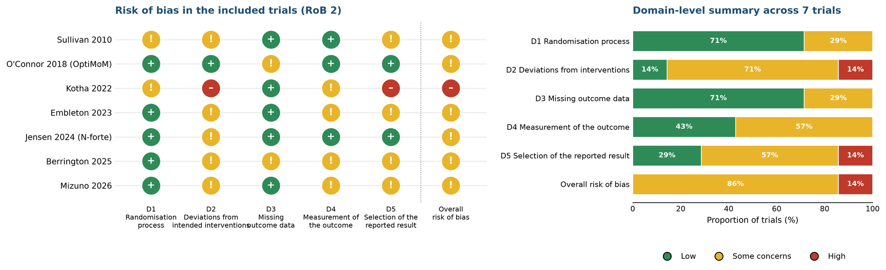
Effects of interventions
Necrotising enterocolitis (Bell stage II or greater) (6 trials)
Six trials reported NEC of modified Bell stage II or greater in 785 infants (22/433 versus 26/352). The pooled estimate favoured the human milk-derived fortifier but did not reach statistical significance (RR 0.63 (95% CI 0.36 to 1.09); p = 0.10), corresponding to an absolute difference of -15 per 1000 infants (-61 to +31). There was no statistical heterogeneity (I² = 0%, τ² = 0.00, Q p = 0.49) and no evidence of a difference between exclusive-human-milk-diet trials and fortifier-only trials (test for subgroup differences p = 0.62). The result was robust to the analysis model (fixed-effect RR 0.65 (0.39 to 1.10); Peto OR 0.61 (0.33 to 1.11)) and to exclusion of the trial at high risk of bias (RR 0.66 (0.37 to 1.18)). Leave-one-out analysis identified Sullivan 2010 as influential: removing it moved the pooled estimate to RR 0.91 (0.45 to 1.84), whereas removal of any other trial left the estimate between 0.53 and 0.66.
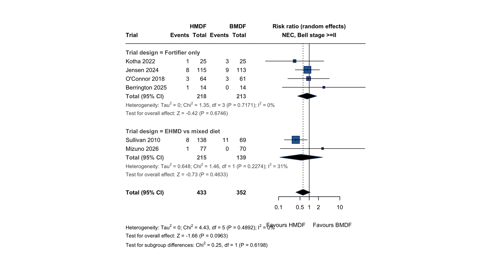
All-cause mortality before discharge (6 trials)
Six trials reported deaths before discharge (25/496 versus 29/415). RR 0.77 (95% CI 0.43 to 1.36); p = 0.37, an absolute difference of -13 per 1000 (-43 to +16). Heterogeneity was low (I² = 10%, τ² = 0.05, Q p = 0.35) and the subgroup test was not significant (p = 0.52). No sensitivity analysis changed the conclusion; the most extreme leave-one-out estimate was RR 0.58 (0.32 to 1.06) on removal of Embleton 2023.
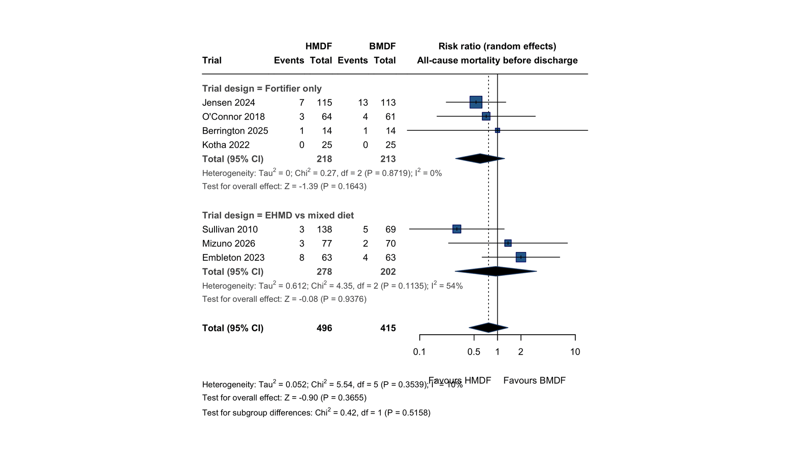
Surgical necrotising enterocolitis (3 trials)
Three trials reported NEC requiring surgery (7/330 versus 13/259). The random-effects estimate was RR 0.42 (95% CI 0.12 to 1.49); p = 0.18, with moderate heterogeneity (I² = 41%, τ² = 0.52, Q p = 0.18). This outcome was not stable across models: the fixed-effect estimate (RR 0.41 (0.17 to 0.96)) and the Peto odds ratio (0.37 (0.15 to 0.93)) both excluded the null, and removal of Jensen 2024 produced RR 0.21 (0.06 to 0.76) while removal of Sullivan 2010 produced RR 0.83 (0.26 to 2.71). With 20 events in total these differences reflect the fragility of the analysis rather than a substantive finding.
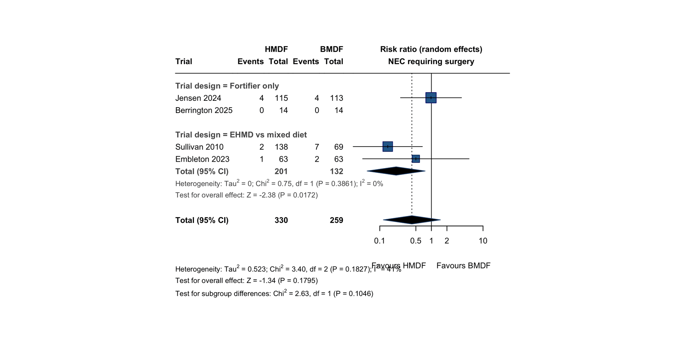
Late-onset or culture-proven sepsis (6 trials)
Six trials contributed (86/482 versus 70/401). The pooled estimate was almost exactly null (RR 1.00 (95% CI 0.75 to 1.34); p = 0.98) with no heterogeneity (I² = 0%, τ² = 0.00, Q p = 0.49). Sepsis definitions differed between trials, from culture-proven bloodstream infection to clinically treated late-onset infection.
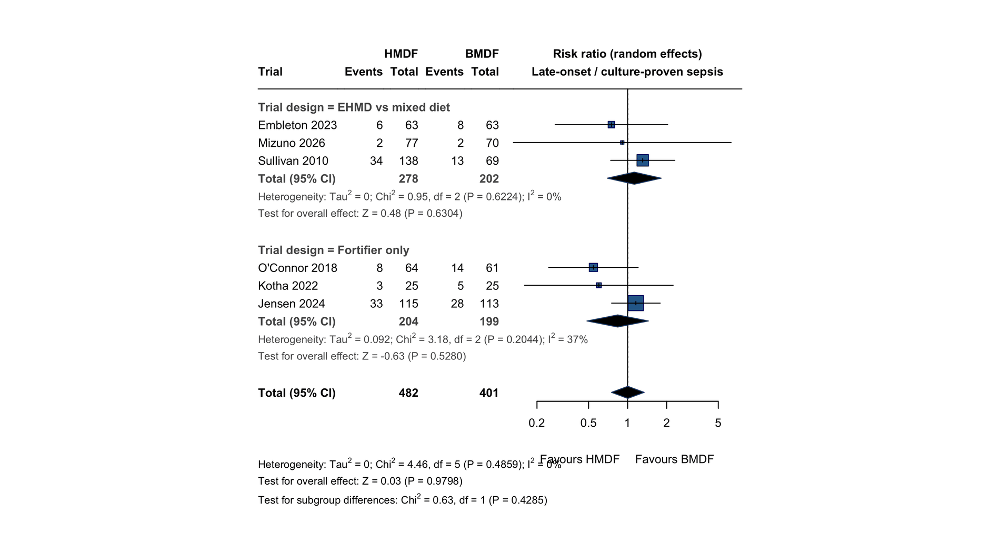
Bronchopulmonary dysplasia / chronic lung disease (5 trials)
Five trials contributed (218/450 versus 196/365). RR 0.96 (95% CI 0.85 to 1.09); p = 0.54, I² = 4%, τ² = 0.00, Q p = 0.39. This is the only outcome for which the pooled confidence interval excludes a large effect in either direction.
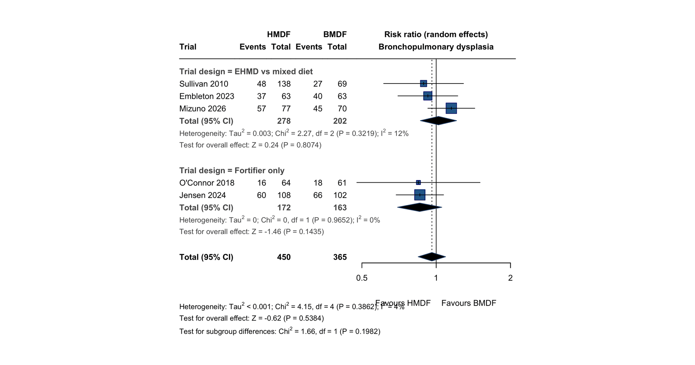
Severe retinopathy of prematurity (5 trials)
Five trials contributed (47/329 versus 47/316). RR 1.02 (95% CI 0.70 to 1.47); p = 0.93, I² = 0%, τ² = 0.00, Q p = 0.44.
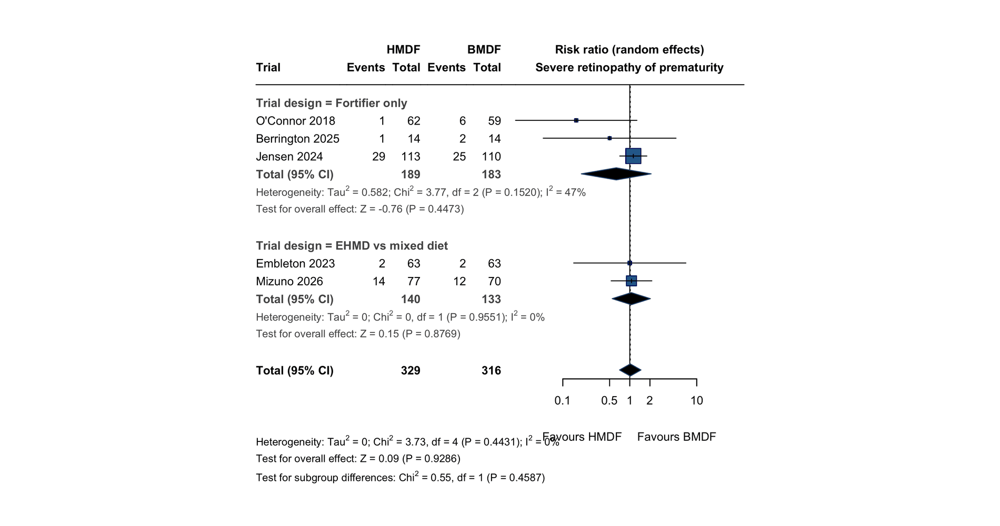
Feeding intolerance or major feeding interruption (3 trials)
Three trials reported a feeding-intolerance or feeding-interruption outcome (73/204 versus 75/199), using trial-specific definitions; in O'Connor 2018 this was the pre-specified primary outcome. RR 0.97 (95% CI 0.76 to 1.25); p = 0.82, I² = 0%, τ² = 0.00, Q p = 0.42. Subgroup analysis was not performed for this outcome because all contributing trials fell in the same design subgroup.
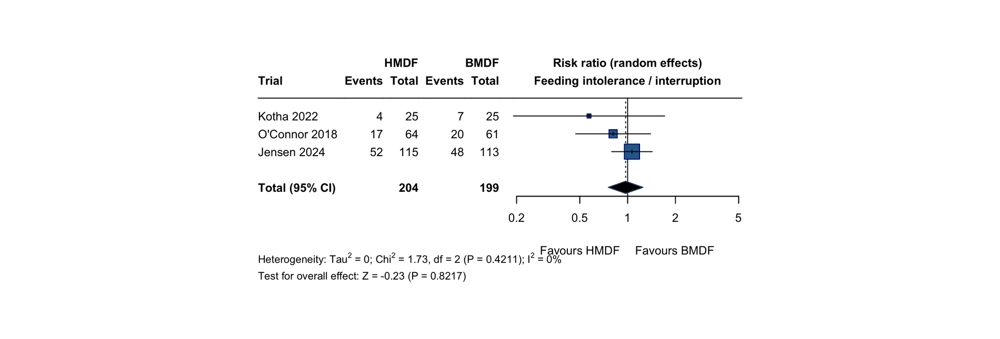
In-hospital weight gain velocity (3 trials)
Three trials reported in-hospital weight gain velocity in 404 infants. MD 0.36 (95% CI -1.30 to 2.03) g/kg/day; p = 0.67, with substantial heterogeneity (I² = 80%, τ² = 1.67, Q p = 0.01). The trials point in opposing directions: Mizuno 2026 favoured the human milk-derived fortifier and Sullivan 2010 the bovine comparator. Sullivan 2010 reported medians and interquartile ranges, which were converted to means and standard deviations, adding a further source of uncertainty.
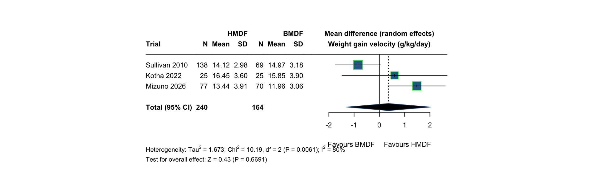
Change in weight z-score (2 trials)
Two small trials reported change in weight z-score. MD -0.37 (95% CI -0.93 to 0.18) z-score units; p = 0.19, I² = 65%, τ² = 0.11, Q p = 0.09. Embleton 2023 reported survivors only and Berrington 2025 measured change from enrolment rather than birth, so the two estimates are not strictly commensurable.
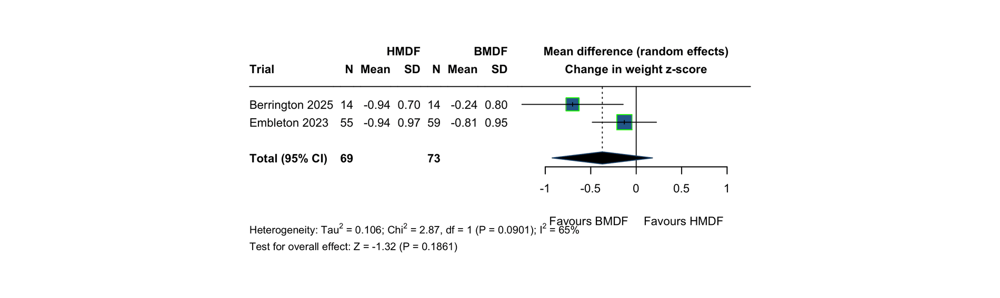
Summary of findings
Table 2 gives the GRADE summary of findings. Imprecision was the dominant reason for downgrading; risk of bias contributed for every outcome except mortality, and inconsistency for the two growth outcomes.
| Outcome | Trials | Participants | Assumed risk (BMDF) | Corresponding risk (HMDF) | Relative effect (95% CI) | Certainty (GRADE) |
|---|---|---|---|---|---|---|
| NEC (Bell stage ≥II) | 6 | 785 | 74 per 1000 | 46 per 1000 (27 to 80) | RR 0.63 (0.36 to 1.09) | Low |
| Surgical NEC | 3 | 589 | 50 per 1000 | 21 per 1000 (6 to 75) | RR 0.42 (0.12 to 1.49) | Very low |
| All-cause mortality | 6 | 911 | 70 per 1000 | 54 per 1000 (30 to 95) | RR 0.77 (0.43 to 1.36) | Low |
| Late-onset sepsis | 6 | 883 | 175 per 1000 | 175 per 1000 (131 to 234) | RR 1.00 (0.75 to 1.34) | Low |
| BPD / chronic lung disease | 5 | 815 | 537 per 1000 | 516 per 1000 (454 to 586) | RR 0.96 (0.85 to 1.09) | Moderate |
| Severe ROP | 5 | 645 | 149 per 1000 | 151 per 1000 (105 to 219) | RR 1.02 (0.70 to 1.47) | Low |
| Feeding intolerance/interruption | 3 | 403 | 377 per 1000 | 366 per 1000 (285 to 471) | RR 0.97 (0.76 to 1.25) | Low |
| Weight gain velocity (g/kg/day) | 3 | 404 | — | — | MD 0.36 (-1.30 to 2.03) | Very low |
| Change in weight z-score (birth to discharge) | 2 | 142 | — | — | MD -0.37 (-0.93 to 0.18) | Very low |
Discussion
Summary of main results. Across seven randomised trials and 920 infants, human milk-derived fortification did not produce a statistically significant reduction in NEC, and the confidence interval remains wide enough to accommodate both a clinically important benefit and a small increase in risk. The same pattern holds for mortality, sepsis, bronchopulmonary dysplasia, retinopathy and feeding intolerance: every pooled estimate is compatible with no effect, and the intervals for the rarer outcomes are wide. Growth outcomes were heterogeneous and gave no consistent signal in either direction.
The point estimate for NEC — a 37% relative reduction — is in the direction the biological hypothesis predicts and is consistent with what earlier syntheses have reported, but it is driven disproportionately by Sullivan 2010: omitting that trial moves the pooled risk ratio from 0.63 to 0.91. Sullivan 2010 is also the trial in which the exposure contrast is widest, because the comparator arm received preterm formula rather than an all-human-milk base diet, and it is the trial whose NEC rate in the control arm (16%) is highest. The surgical NEC result behaves in the same way and is unstable: it reaches conventional significance under a fixed-effect or Peto model and loses it under random effects, which is the expected behaviour of a 20-event analysis with moderate heterogeneity and should not be read as evidence of benefit.
Overall completeness and applicability. The evidence applies to very preterm and very low-birth-weight infants receiving a human milk base diet in well-resourced neonatal units, and almost all of it comes from a single manufacturer's product. It does not address infants fed predominantly formula, nor does it establish whether any benefit — if real — comes from the fortifier itself or from displacement of preterm formula elsewhere in the diet. The subgroup contrast between exclusive-human-milk-diet trials and fortifier-only trials was not significant for any outcome, but with three to four trials per subgroup that test has very little power and the absence of a detected difference should not be taken as evidence that the two designs answer the same question.
Quality of the evidence. Certainty was rated moderate for bronchopulmonary dysplasia, low for NEC, mortality, sepsis, retinopathy and feeding intolerance, and very low for surgical NEC and the two growth outcomes. Imprecision was the dominant reason for downgrading throughout: the entire evidence base contains 48 cases of NEC and 54 deaths, an order of magnitude short of the information size needed to detect a plausible effect on either outcome.
Agreements and disagreements with other studies. The direction and magnitude of the NEC estimate agree with the 2019 Cochrane review and with subsequent pairwise and network meta-analyses, all of which likewise found no statistically significant difference while noting that observational studies report larger benefits. The discrepancy between the randomised and observational literatures is substantial and is the strongest argument for treating the observational estimates with caution: the units that adopted exclusive human milk diets early also changed feeding practice in other ways over the same period.
Implications for practice. The randomised evidence does not currently support a recommendation to replace bovine milk-derived fortifier with human milk-derived fortifier for the prevention of NEC or death. Neither does it exclude a worthwhile benefit. Given the substantial cost difference and the constraints on donor milk supply, a unit adopting human milk-derived fortification is doing so on the basis of evidence that is, at best, of low certainty.
Implications for research. A trial powered on NEC and death is the clear priority; the information size required — several thousand infants — implies an international collaboration. Such a trial should hold the base diet constant between arms so that the fortifier itself is the only variable, should adjudicate NEC blind to allocation, and should report cost and donor-milk utilisation alongside clinical outcomes. The NEOVASC trial, whose main clinical results are not yet published, and any subsequent registration of the trials identified here should be checked at the next update of this review.
Authors’ conclusions
In preterm infants receiving human milk, fortification with a human milk-derived product rather than a bovine milk-derived product has not been shown to reduce necrotising enterocolitis, mortality, sepsis, chronic lung disease or retinopathy. The pooled estimate for NEC favours the human milk-derived product but is compatible with no effect, depends heavily on the earliest and least directly relevant trial, and rests on 48 events in total. The certainty of the evidence is low for both primary outcomes. Adequately powered randomised trials that hold the base diet constant are needed before human milk-derived fortification can be recommended on clinical grounds.
Characteristics of included studies: reports
| Report | Trial | Role |
|---|---|---|
| Sullivan 2010, J Pediatr | Sullivan 2010 | Primary report |
| Ghandehari 2012, BMC Res Notes 5:188 | Sullivan 2010 | Secondary analysis: parenteral nutrition duration |
| Lucas 2020, Breastfeed Med | Sullivan 2010 | Post hoc reanalysis restricted to 100% mother's-milk base diet |
| O'Connor 2018, Am J Clin Nutr | O'Connor 2018 (OptiMoM) | Primary report |
| Hopperton 2019, Curr Dev Nutr | O'Connor 2018 (OptiMoM) | 18-month neurodevelopmental follow-up |
| Kumbhare 2022, Cell Rep Med | O'Connor 2018 (OptiMoM) | Gut microbiome secondary report |
| Asbury 2022, Cell Host Microbe | O'Connor 2018 (OptiMoM) | Gut microbiome secondary report |
| Embleton 2023, JAMA Netw Open | Embleton 2023 | Primary report (gut microbiome) |
| Uthaya 2022, Early Hum Dev | Embleton 2023 | Body-composition sub-study (2 of 4 sites, n=38 randomised) |
| Jensen 2024, EClinicalMedicine | Jensen 2024 (N-forte) | Primary report |
| Jensen 2021, BMJ Open | Jensen 2024 (N-forte) | Trial protocol |
| Jensen 2025, EClinicalMedicine | Jensen 2024 (N-forte) | Corrigendum |
| Berrington 2025, J Pediatr Gastroenterol Nutr | Berrington 2025 | Primary report |
| Mizuno 2026, J Perinatol | Mizuno 2026 | Primary report |
| Kotha 2022, J Pediatr Neonat Individual Med | Kotha 2022 | Primary report (identified by hand-searching) |
Characteristics of excluded studies
| Report | Reason for exclusion |
|---|---|
| Yeung 2023, J Perinatol | Cost analysis of the OptiMoM trial; economic outcomes are outside the review's outcome set |
| Kigozi 2024, J Perinatol | Biochemical-response secondary report of the OptiMoM trial; no review outcome reported |
| Rautava 2022, Cell Host Microbe | Invited commentary on Asbury 2022, not a primary study report |
| Chhina 2026, Indian J Pediatr | Single-arm case series (n=28) of a human milk-derived fortifier; no bovine comparator |
Studies awaiting classification
| Report | Notes |
|---|---|
| Mitterer 2026, Nutrients (NEOVASC ancillary; NCT04413994) | Only a single-centre ancillary neuroimaging analysis (n=54) is published; main clinical results not yet reported. The randomised contrast is prolongation of human milk-derived fortification to 36 wk PMA versus switch to bovine fortifier/formula at 32 wk PMA, and NEC Bell stage ≥II before enrolment was an exclusion criterion. |